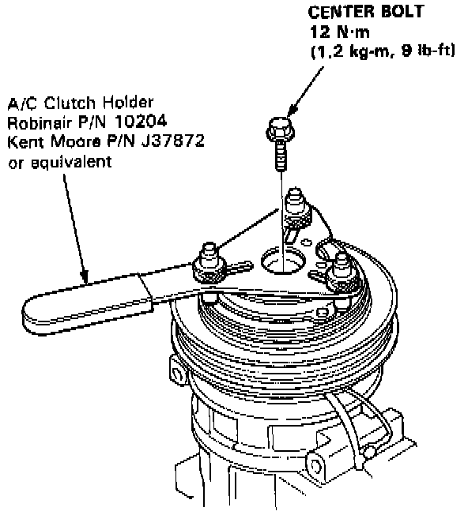
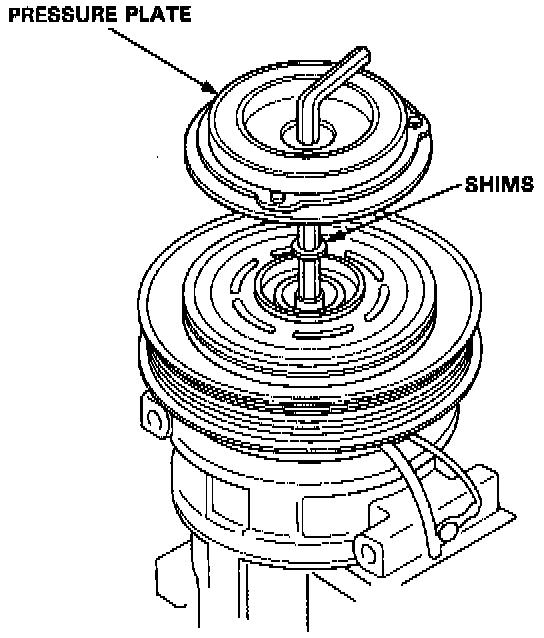
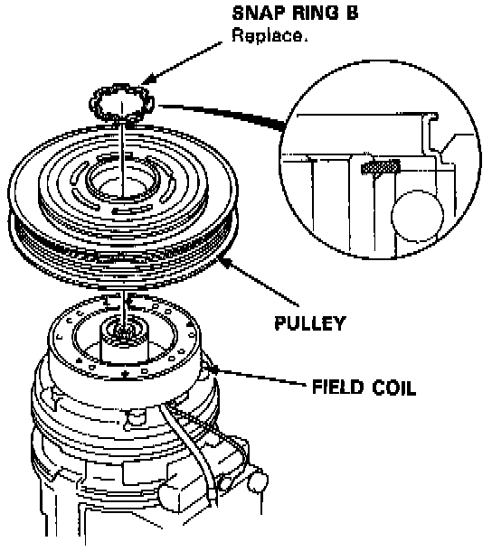
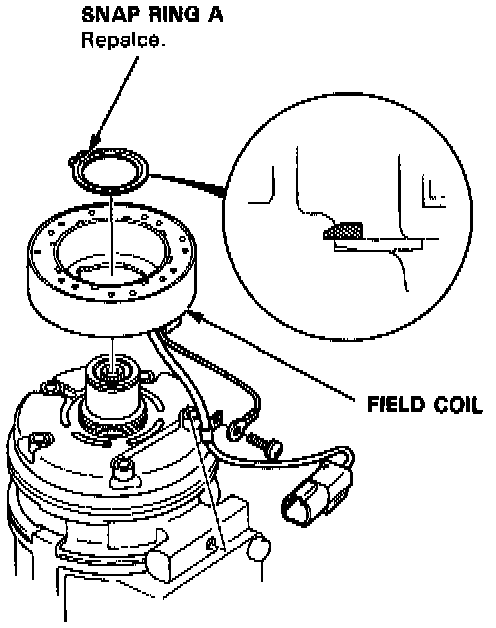

Compressor Clutch Coil: Service and Repair

1. Remove the center bolt.

2. Remove the pressure plate and shim(s) taking care not to lose the shims.

3. Use circlip pliers to remove snap ring B, then remove the pulley.
NOTE: Do not damage the compressor body and pulley.

4. Remove snap ring A and the field coil.
NOTE: Do not damage the compressor body and field coil.
5. Install parts in the reverse order of removal, and:
- Install the field coil with the wire side facing up.
- Clean the pulley and compressor sliding surfaces with non-petroleum solvent.
- Check the pulley bearings for excessive play.
- Make sure the circlip fits in its groove properly.
- Inspect clutch clearance, and adjust if necessary. Testing and Inspection
- Apply locking agent to the threads on the center bolt. Torque to 12 Nm (9 lb-ft)
- Make sure that the pulley turns smoothly, after it's reassembled.